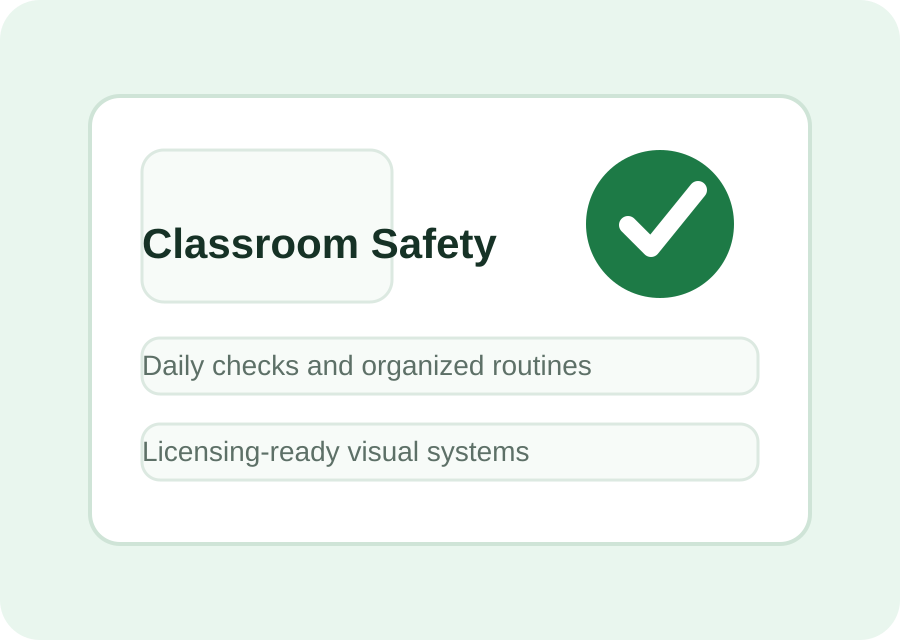
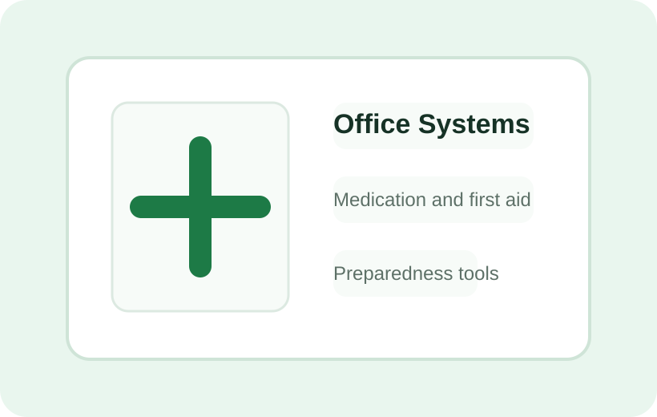

Infant Care Solutions
Crib, bottle, pacifier, bib, laundry, and temperature tools designed for daily infant-room routines.
View infant toolsProfessional childcare safety systems
CareCheck Technologies creates practical tools for infant care, classroom routines, medication organization, safety checks, and licensing readiness.

Built for busy childcare teams
From infant care logs to medication stations and classroom checklists, CareCheck helps programs keep everyday safety work visible, consistent, and ready for review.
Crib, bottle, pacifier, bib, laundry, and temperature tools designed for daily infant-room routines.
View infant tools
Safety and classroom organization tools for active toddler spaces, transitions, and topical care.
View toddler tools
Medication, first aid, temperature, and emergency preparedness systems for front-office readiness.
View office toolsCareCheck Essentials
Labels, checklists, sanitation signs, and classroom supplies help teams keep expectations clear without adding complicated processes.
Browse Essentials